Abstract
This document describes the architecture of the Feature Hypotheses Simulation (FHS) — a Python library and set of Jupyter notebooks that help Product Owners, Portfolio Owners, and Agile leaders make clearer backlog and roadmap decisions with proven risk methods such as Monte Carlo, VaR-style value floors, and CVaR. Risk Managers remain the second audience for governance, review, and validation. No statistics background required: open a notebook, define your feature, run the simulation, read the result.
Documentation Overview
Streamlined architecture documentation for a focused risk simulation platform.
| Section | Content |
|---|---|
1. Introduction and Goals |
|
2. Architecture Constraints |
|
3. System Scope and Context |
|
4. Solution Strategy |
|
5. Building Block View |
|
6. Runtime View |
|
7. Deployment View |
|
8. Cross-cutting Concepts |
|
9. Architecture Decisions |
|
10. Quality Requirements |
|
11. Risks and Technical Debt |
|
12. Glossary |
1. Introduction and Goals
1.1. Requirements Overview
The Feature Hypotheses Simulation (FHS) applies financial risk assessment methods to product backlog decisions. It enables product teams to:
-
Quantify feature uncertainty using proven statistical methods (Monte Carlo simulation, VaR, CVaR)
-
Support Product Owners, Portfolio Owners, and Agile leaders with data-driven prioritization and budget-fit insights
-
Provide Risk Managers with portfolio-level analysis (correlation, stress tests, budget frontier)
-
Make complex risk concepts accessible without requiring specialized statistical training
1.2. Quality Goals
The quality goals below are ordered by priority. Correctness is non-negotiable: stakeholders act on the numbers, so a statistically wrong result causes worse decisions than no result at all. Simplicity and Transparency are co-constraints that ensure results remain understandable and contextualized for product and governance audiences. Practical Value closes the loop: an insight that cannot be acted on in a sprint or budget meeting is not useful.
| Priority | Quality Goal | Motivation |
|---|---|---|
1 |
Correctness |
Risk calculations must be statistically sound. Product Owners, Portfolio Owners, Agile leaders, and Risk Managers rely on the numbers for real business decisions. |
2 |
Simplicity |
Results must be understandable without a finance background. Plain language, EUR figures, and clear labels are required. |
3 |
Transparency |
Every metric must be explained in context, not only displayed as a number. |
4 |
Practical Value |
Insights must connect directly to actionable decisions on priority, build/skip, and budget fit. |
1.3. Scope
1.3.1. In Scope
-
Monte Carlo simulation for individual features and portfolios
-
Portfolio-level risk analysis: VaR, CVaR, correlation, stress tests, budget frontier (ILP/SLSQP)
-
Jupyter notebooks as the primary user interface
-
Data visualization with Matplotlib and Plotly
-
Local deployment only (Lima VM or Docker)
1.3.2. Out of Scope
-
Financial trading or investment execution
-
Real-time market data feeds
-
Multi-tenant SaaS operations
-
REST API or database backend
-
Personal data processing (see GDPR Appendix)
1.4. Stakeholders
| Role | Expectations | Pain Points Addressed | When They Use FHS |
|---|---|---|---|
Product Owner |
Risk-informed feature prioritization, sprint planning, and stakeholder communication. |
Uncertainty in ROI predictions and difficulty justifying backlog decisions with data. |
Sprint planning, backlog refinement, roadmap review, investment committee prep. |
Portfolio Owner / Agile leader |
Clear roadmap trade-offs, budget-fit decisions, and prioritization across initiatives. |
Hard-to-compare feature proposals and weak downside visibility before commitment. |
Quarterly planning, budget allocation, portfolio review, initiative go/no-go decisions. |
Risk Manager |
Portfolio-level risk metrics including CVaR, stress tests, correlation analysis, and budget frontier. |
Limited tooling for applying financial risk methods to product portfolios. |
Risk committee reviews, portfolio stress testing, audit preparation, budget frontier analysis. |
Business Stakeholder |
Clear, quantified risk exposure with EUR figures and confidence intervals. |
Surprises in product outcomes and weak data-driven support before budget commitment. |
Decision briefings, executive reviews, pre-approval sign-off. |
1.5. Architecture Canvases
See Appendix: Architecture Canvases for the full canvas views (Inception Canvas and Communication Canvas).
1.6. Reading Guide
Different readers need different parts of this documentation. The table below gives a 30-minute reading path per role.
| Role | Goal | Recommended reading path |
|---|---|---|
Product Owner |
Understand what FHS does and how to run a first simulation |
Kap. 1 (this page) → Kap. 4 (Solution Strategy) → |
Portfolio Owner / Agile leader |
Understand portfolio-level analysis and budget decisions |
Kap. 1 → Kap. 5 (Building Blocks — notebook tracks) → Kap. 4 → Advanced notebooks (A01/A02) → Kap. 12 (Glossary) |
Risk Manager |
Understand risk methods, governance, and assumptions quality |
Kap. 1 → ADR-002 (risk methods) → Kap. 8 (Statistical Accuracy, Security, Governance) → Kap. 11 (Risks) → Kap. 12 (Glossary) |
Architect (new to the project) |
Understand architecture structure and key decisions |
Kap. 1 → Kap. 5 (DDD layers) → Kap. 6 (Runtime sequences) → Kap. 7 (Deployment) → Kap. 8 (Cross-cutting) → Kap. 9 (ADRs) → Kap. 10 (Quality) |
CFO / Business Stakeholder |
Understand value, risk exposure, and decision outputs |
Kap. 1 → Kap. 4 (solution) → |
Key Goal: Apply financial risk methods that analysts already trust — VaR, CVaR, Monte Carlo — to product decisions, in language that Product Owners, Portfolio Owners, Agile leaders, and Risk Managers can act on immediately.
Part of Arc42 Architecture Documentation
2. Architecture Constraints
2.1. Technical Constraints
| Constraint | Rationale |
|---|---|
Python 3.14+ |
Baseline requires-python is 3.14+, validated on current runtime versions. |
Jupyter Lab |
Primary user interface where code, results, and explanations are combined. |
Docker |
Zero-setup installation and reproducible environment startup. |
Linux / macOS |
Scripts and Makefiles target Linux and macOS workflows. |
2.2. Organizational Constraints
| Constraint | Rationale |
|---|---|
No financial training required |
Product Owners, Portfolio Owners, Agile leaders, and Risk Managers must run simulations without statistical expertise. |
Agile context |
Risk assessments must fit into sprint planning sessions. |
2.3. Additional Technical Constraints
| Constraint | Rationale |
|---|---|
MIT License (open source) |
Third-party libraries (NumPy, SciPy, Pydantic, Matplotlib, Plotly, JupyterLab, PuLP) are all permissively licensed. The FHS library itself is MIT. No GPL or AGPL transitive dependencies are permitted. |
Browser: modern Chromium/Firefox (ES2020+) |
JupyterLab 4.x requires a modern browser. Internet Explorer and legacy Edge are not supported. Interactive Plotly widgets require WebGL. |
Memory: minimum 2 GB free RAM for 100,000-scenario runs |
NumPy arrays for 100 k scenarios × 10 features fit in approximately 80 MB. JupyterLab kernel overhead and Plotly rendering bring the practical minimum to ~2 GB. Reduce |
No persistent storage beyond local filesystem |
No database, no cloud sync, no remote state. Scenario YAML files and exported notebooks are the only persistent artifacts. |
2.4. Conventions
-
Documentation language: US English
-
Code style: PEP 8, formatted with ruff (88-character line length)
-
License: MIT License — Copyright © 2026 Stefan Zils
-
Versioning: Semantic versioning
Part of Arc42 Architecture Documentation
3. System Scope and Context
3.1. System Context

Legend: C4 Notation Reference
Canvas Views: Architecture Inception Canvas and Architecture Communication Canvas
3.2. Business Context
3.2.1. Primary Users
| User | Interaction |
|---|---|
Product Owner |
Defines feature parameters, runs simulations, and reviews expected business value, business value floor, and decision recommendations. |
Portfolio Owner / Agile leader |
Uses portfolio views to compare roadmap options, budget fit, and delivery confidence. |
Risk Manager |
Runs portfolio analysis including CVaR, correlation matrix, stress tests, and budget frontier. |
Business Stakeholder |
Reviews exported notebook reports with quantified risk exposure in EUR. |
3.3. Technical Context
| Interface / Dependency | Direction | Purpose |
|---|---|---|
|
Input |
Scenario source of truth (features, budget, strategy metadata) loaded via |
|
Input |
CLI ingest of YAML/JSON/CSV feature sets for ad-hoc planning and report generation. |
NumPy / SciPy / Pandas |
Internal dependency |
Numerical simulation, risk metrics, and tabular portfolio analysis. |
Matplotlib / Plotly |
Output |
Visual communication of simulation distributions and portfolio risk summaries in notebooks/reports. |
Markdown / notebook exports |
Output |
Decision artifacts for Product Owner and stakeholder review (local files, no remote API push). |
Part of Arc42 Architecture Documentation
4. Solution Strategy
4.1. Technology Decisions
| Decision | Technology Choice | Rationale |
|---|---|---|
Programming Language |
Python 3.14+ |
Modern Python with access to the latest scientific tooling and language features. |
Risk Calculations |
NumPy / SciPy |
Optimized mathematical libraries for Monte Carlo simulation and statistical analysis. |
User Interface |
Jupyter Notebooks |
Interactive analysis environment with code, results, and explanations in one document. |
Deployment |
Docker + GitHub Actions |
Consistent environments across machines with automated CI/CD. |
Documentation |
Arc42 + docToolchain |
Enterprise-standard architecture documentation. |
4.2. Architectural Approach
The solution follows a KISS (Keep It Simple) principle — a direct Python library with Jupyter notebooks as the primary interface:
-
No REST API, no microservices — notebooks import the FHS library directly; this eliminates network overhead and deployment complexity
-
Layered architecture (DDD-inspired) — domain (
core/model), services (core/services), application (application), infrastructure (infra), and notebook facade (notebook) -
Statistical accuracy — NumPy/SciPy provide proven mathematical methods for Monte Carlo simulation, VaR, and CVaR
-
Progressive disclosure — three notebook tracks (core, tutorial, advanced) let users go as deep as their role requires
-
Business context — every metric is presented in EUR with a plain-language explanation alongside the number
4.3. Notebook Track Design
The learning path is organized into three tracks, each with a distinct audience and complexity level:
| Track | Audience | Focus |
|---|---|---|
Core (01-07) |
Product Owners, Portfolio Owners, and Agile leaders new to FHS |
Single-feature analysis, portfolio advising, risk layers, delivery-risk case study, and executive decision synthesis. |
Tutorial (T01) |
Product Owners first, Risk Managers second |
Distribution selection and uncertainty-model guidance. |
Advanced (A01-A02) |
Portfolio Owners, Agile leaders, and Risk Managers |
Portfolio optimization, budget constraints, stress tests, and executive summaries. |
4.4. Performance Strategy
The quality scenario requires a 10,000-scenario simulation to complete in under 2 seconds on standard laptop hardware. The strategy to meet this target:
-
Vectorized NumPy operations — all Monte Carlo draws and risk calculations use array operations; no Python loops over scenarios.
-
Lazy seeding — each feature simulation receives a deterministic seed offset (
base_seed + feature_index); the seed is set once per feature, not per scenario. -
No redundant re-simulation — the
AdvancedPortfolioServicesub-facades share a single simulation run; each sub-facade reads from the same result objects rather than re-running Monte Carlo. -
100,000 scenarios as the audit default — development workflows use 1,000–5,000 scenarios; the full 100,000-scenario run is reserved for stable tail-metric reporting and CI validation.
4.5. Correctness Strategy
Risk calculations must be statistically sound. The strategy to ensure correctness:
-
Proven libraries — NumPy
np.percentileandnp.meanare used for VaR and CVaR rather than hand-rolled implementations. -
Seed-based reproducibility — the same seed + same YAML always produces the same results, enabling diff-based regression detection.
-
Property-based tests — the test suite includes Hypothesis-driven property tests for distribution sampling (non-negativity, range constraints, ordering invariants).
-
Architecture boundary tests —
cicd/run-cicd.sh archverifies that no notebook imports fromfhs.core.*directly, enforcing the DDD dependency rule. -
BVF 95% ordering invariant — tests assert
p5 ≤ expected ≤ p95for every simulated feature result.
Part of Arc42 Architecture Documentation
5. Building Block View
5.1. Level 2: Container Landscape
FHS consists of two containers: the Jupyter Lab interface where users run analysis, and the FHS Python Library that provides all simulation and risk logic. The diagram below shows how they connect and what each container is responsible for.
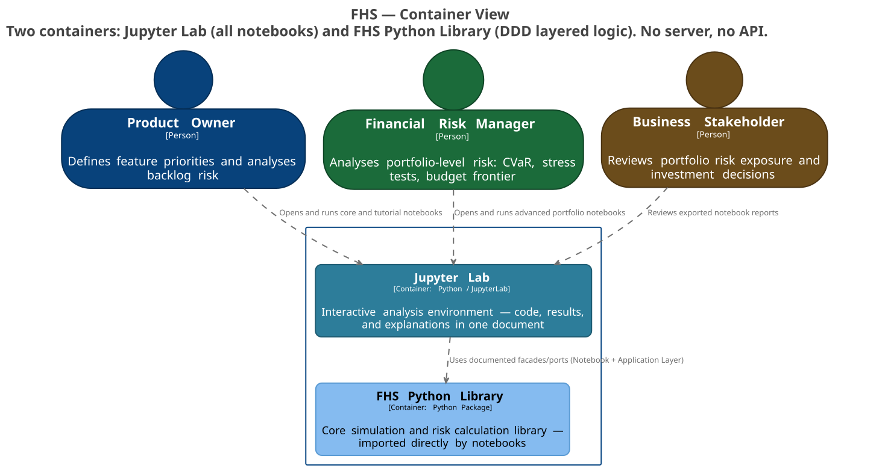
| Container | Technology | Responsibilities |
|---|---|---|
Jupyter Lab |
Python 3.14+, JupyterLab |
Primary user interface — interactive analysis and visualization |
FHS Python Library |
Python package, NumPy, SciPy |
Core business logic: Monte Carlo simulation, VaR/CVaR, portfolio analysis |
Notebooks import the FHS library directly — no REST API, no message queue, no database:
# Modern approach (DDD-based, YAML config):
from fhs.notebook import load_scenario
scenario = load_scenario("blockchain", editable=True)
# Access features, budget, strategy from scenario object
# Or: Direct API usage (for custom features):
from fhs import Feature, FeatureSimulator
feature = Feature(
name="Mobile Checkout",
expected_users=20_000,
conversion_rate=0.12,
uncertainty=0.20,
business_value_per_conversion=45.0,
development_cost=25_000,
)
simulator = FeatureSimulator(seed=42)
result = simulator.simulate_feature(feature, scenarios=10_000)5.2. Level 3: Component Views
5.2.1. Container "Jupyter Lab" — Notebooks by Track
The three notebook tracks serve different audiences: the Core track guides Product Owners through a first simulation and portfolio decision; the Tutorial track covers distribution selection; the Advanced track adds optimization, stress testing, and executive reporting for Risk Managers and CFOs.
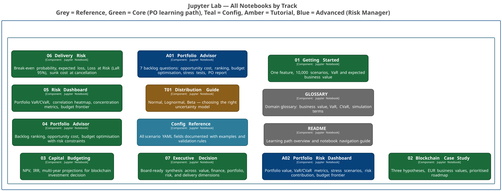
| Notebook | Purpose |
|---|---|
01 Getting Started |
First simulation with feature model, Monte Carlo, VaR, and expected business value. |
02 Blockchain Case Study |
Three hypotheses with strategic categories and EUR business values using central blockchain.yaml configuration. |
03 Capital Budgeting |
Budget-constrained feature selection and budget-fit analysis. |
04 Portfolio Advisor |
Ranked feature list, budget recommendation, and executive summary workflow. |
05 Risk Analysis |
Risk layer simulation, Shapley attribution, and sensitivity analysis. |
06 Delivery Risk |
Bernoulli gate model, break-even probability, expected loss, LaR 95%, and sunk cost at cancellation. |
07 Executive Decision |
Board-ready synthesis across notebooks 02-06 with five investment dimensions, traffic-light recommendation, and next actions. |
| Notebook | Purpose |
|---|---|
GLOSSARY |
Canonical glossary of product decision and risk terms. |
README / config reference |
Scenario config schema reference and supporting configuration notes. |
| Notebook | Purpose |
|---|---|
T01 Distribution Guide |
Normal, Lognormal, and Beta guidance for uncertainty modeling. |
| Notebook | Purpose |
|---|---|
A01 Portfolio Advisor |
Opportunity cost, ranking, budget optimization, concentration risk, and PO report export. |
A02 Portfolio Risk Dashboard |
Portfolio value table, stress scenarios, risk contribution, and budget frontier chart. |
5.2.2. Container "FHS Python Library" — DDD Components
The library follows DDD-inspired layering. Data flows strictly downward: the Presentation layer calls Application services, which call Domain and Core Service logic, which call Infrastructure for I/O. No upward or sideways dependencies are allowed.
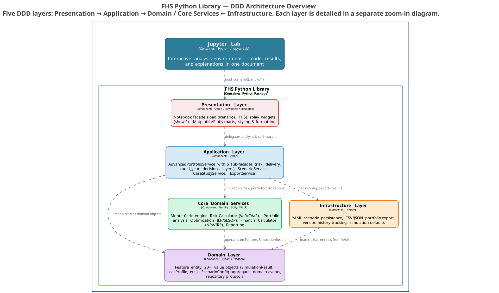
The ports and facades diagram below zooms in on how the Presentation layer (notebooks) accesses library logic through the fhs.notebook facade, and how the Application layer exposes the AdvancedPortfolioService with domain-specific sub-facades.
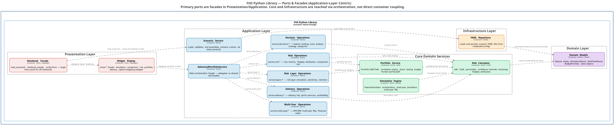
The FHS Python Library follows DDD-inspired layering with five architectural layers:
| Layer | Technology | Responsibility |
|---|---|---|
Presentation |
ipywidgets, Matplotlib, Plotly |
Notebook facade ( |
Application |
Python |
Service orchestration: |
Domain |
Pydantic |
|
Core Services |
NumPy, SciPy, PuLP |
Monte Carlo engine, Risk Calculator (VaR/CVaR), Portfolio analysis, Optimization (ILP/SLSQP), Financial Calculator (NPV/IRR) |
Infrastructure |
PyYAML |
YAML scenario persistence, CSV/JSON portfolio export, version history, simulation defaults |
The following diagrams zoom into each layer individually.
5.2.2.1. Presentation Layer
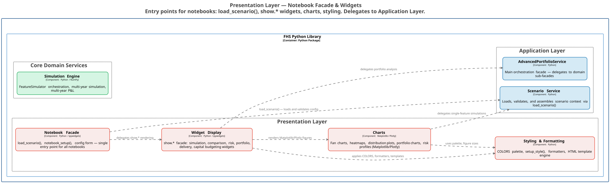
The presentation layer lives in presentation/notebook/ and is structured into focused sub-modules:
| Module | Responsibilities |
|---|---|
|
|
|
Matplotlib chart functions. All return |
|
|
|
Pure formatting functions (no I/O) — convert domain value objects to styled HTML strings. |
|
Jinja2 templates for capital budgeting summary and other multi-section reports. |
FHSDisplay Mixin Facade
FHSDisplay (presentation/notebook/display.py) is assembled from six mixins, one per business domain:
| Mixin | show.* methods |
|---|---|
|
|
|
|
|
|
|
|
|
|
|
|
5.2.2.2. Application Layer
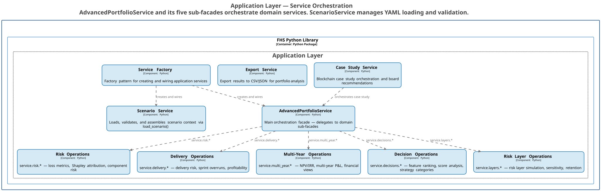
AdvancedPortfolioService Sub-Facades
AdvancedPortfolioService exposes five domain sub-facades, each encapsulating a coherent set of operations:
service = AdvancedPortfolioService(features, budget=1_000_000, seed=42)
service.risk.* # Risk attribution, loss metrics, Shapley analysis
service.delivery.* # Delivery risk, sprint overruns, profitability
service.multi_year.* # Multi-year simulations, NPV/IRR, financial views
service.decisions.* # Portfolio decisions, optimization, budget analysis
service.layers.* # Risk layer simulationsAll sub-facades use an explicit PortfolioContext Protocol instead of host: Any.
5.2.2.3. Domain Layer
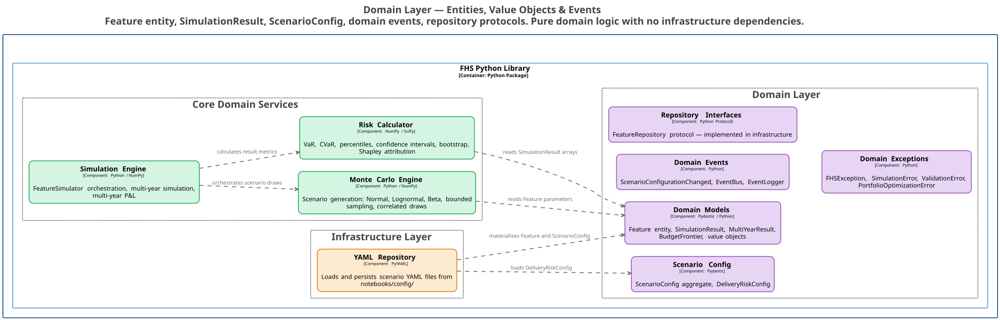
5.2.2.4. Core Domain Services
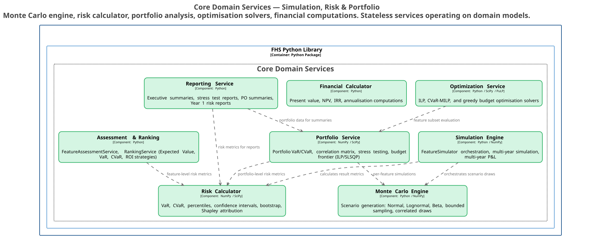
5.2.2.5. Infrastructure Layer
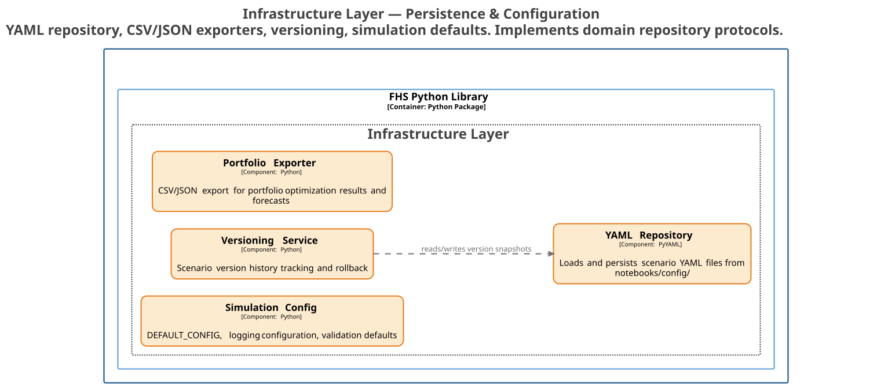
5.2.2.6. Component Detail
| Component | Technology | Responsibilities |
|---|---|---|
Domain Model ( |
Pydantic BaseModel, frozen dataclasses |
Core entities ( |
Monte Carlo Engine ( |
NumPy |
Scenario generation: Normal, Lognormal, Uniform; bounded and correlated sampling |
Risk Services ( |
NumPy / SciPy |
|
Simulation Orchestration ( |
Orchestration |
Main controller — coordinates Monte Carlo engine and risk calculations |
Portfolio Services ( |
NumPy / SciPy |
Portfolio VaR/CVaR, correlation matrix handling, optimization, budget frontier (ILP/SLSQP) |
Application Services ( |
Business orchestration |
|
Repository Contract + Infrastructure ( |
Protocol + YAML |
|
Scenario Service ( |
Orchestration |
|
Notebook Facade ( |
Presentation |
|
Presentation Layer ( |
Presentation |
Mixin-based |
Domain Events ( |
Event Bus |
|
Example Data ( |
Helper utilities |
Reusable helper functions ( |
Exception Hierarchy ( |
Python exceptions |
Custom exception hierarchy: |
UX Simulation ( |
NumPy |
UX simulation: |
Configuration ( |
Dataclass |
|
Reporting ( |
Pandas, Matplotlib |
Portfolio summaries ( |
Part of Arc42 Architecture Documentation
6. Runtime View
6.1. Typical Product Owner Workflow
The following sequence shows how a Product Owner runs a first feature risk assessment: from opening the notebook, through Monte Carlo simulation, to reading the BVF 95% result and exporting the report.
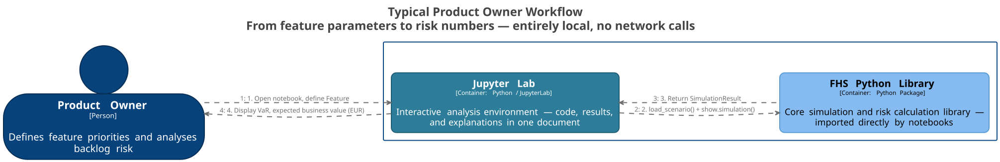
| Step | User action | System processing |
|---|---|---|
1 |
Open |
Kernel initialises Python environment |
2 |
Load scenario context via notebook facade: |
|
3 |
Run feature simulation: |
|
4 |
Read results: |
SimulationResult properties return pre-calculated values |
5 |
Adjust scenario parameters and persist changes |
|
6.2. Sequence Diagram — Feature Simulation
The diagram below traces the full call path from notebook cell to displayed result.
Read it as: the Product Owner triggers a single cell; the notebook facade hides all service and engine calls behind load_scenario() and simulate_feature().
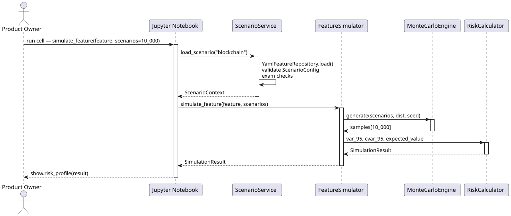
6.3. Sequence Diagram — Scenario Save with Domain Events
When the Product Owner edits scenario parameters via the Configuration Form (Notebook 02) and saves, the following event flow persists the change and creates an audit entry.
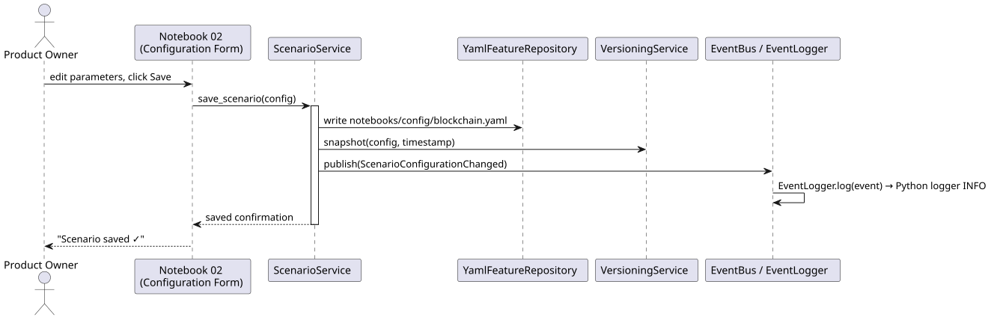
6.4. Portfolio Workflow (Advanced)
For portfolio analysis the Product Owner or Risk Manager uses AdvancedPortfolioService with its domain sub-facades:
from fhs.application import AdvancedPortfolioService
features = [feature_a, feature_b, feature_c]
service = AdvancedPortfolioService(features, budget=200_000, seed=42)
ranking = service.decisions.rank_features(strategy="var_floor")
optimised = service.optimize(solver="ilp", strategy="var_floor")
stress = service.delivery.stress_test(features, fail_multiplier=1.5)6.5. CLI Workflow (Headless Planning)
The same core services are available without notebooks:
fhs plan --features backlog.yaml --budget 200000 --scenarios 10000 --output po-report.mdThe CLI parses features (YAML/JSON/CSV), runs AdvancedPortfolioService, and emits a markdown decision report for planning sessions.
Part of Arc42 Architecture Documentation
7. Deployment View
FHS runs entirely locally — no cloud, no server, no API. Two deployment options address different user contexts and operating systems.
7.1. Deployment Options Overview
| Option | Best for | Platform | Entry point |
|---|---|---|---|
Lima VM Sandbox |
macOS developers wanting a complete, isolated dev environment |
macOS (Intel + Apple Silicon) |
|
Docker |
Quick start on any OS; CI/CD pipelines |
Linux · macOS · Windows |
|
7.2. Option 1 — Lima VM Development Sandbox (recommended for macOS)
A headless Ubuntu 24.04 VM with the full FHS development environment (Python 3.14, JupyterLab, Claude Code, Go, Dagger) managed by Lima / QEMU. Code runs inside the VM; IDEs and browsers connect from the Mac.
7.2.1. C4 Deployment Diagram — Lima VM
The diagram shows the VM node hierarchy: the Mac host manages the Lima VM; inside the VM, Docker runs the JupyterLab and documentation containers; the browser connects to JupyterLab over a forwarded port.
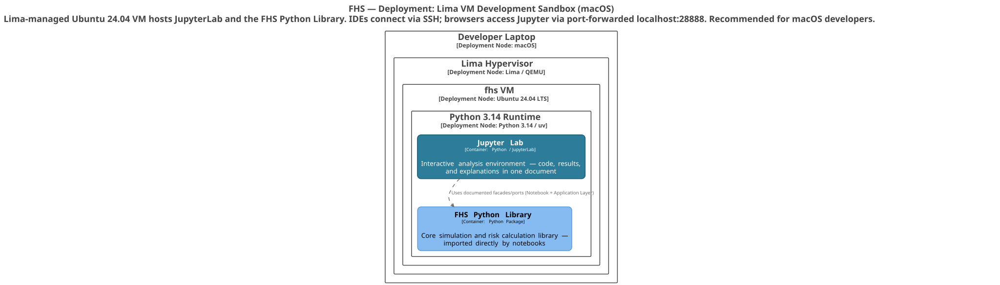
7.2.2. Node Details
| Node | Technology | Description |
|---|---|---|
|
Ubuntu 24.04 LTS (Lima / QEMU) |
Isolated Linux environment with Python 3.14, uv, Node.js 22, Go, Dagger, Claude Code, Copilot CLI, JupyterLab, Docker CLI, Ollama CLI |
Python 3.14 Runtime |
uv package manager |
Manages the FHS virtual environment ( |
JupyterLab 4.x |
Python / JupyterLab |
Interactive analysis environment hosting all notebooks — the only user interface for FHS |
FHS Python Library |
Python package |
Imported directly by notebooks; provides DDD-layered Monte Carlo simulation, VaR/CVaR, portfolio analysis, and optimization services |
Scenario Configuration |
YAML files |
|
Documentation Server |
docToolchain 3.4.1 / JDK 21 / Gradle 8.5 |
On-demand arc42 HTML documentation build — port 28085 forwarded to host localhost:28085 |
Web Browser |
Chrome / Firefox / Safari |
Accesses JupyterLab via Lima port-forward (VM 8888 → host 28888) |
IDE / Editor |
VS Code Remote-SSH / JetBrains Gateway |
Remote development: code, lint, test inside the VM while editing locally |
7.2.3. Port Forwarding
| Host port | VM port | Service |
|---|---|---|
|
|
JupyterLab |
|
|
Docs (alternative) |
|
|
Arc42 documentation |
7.2.4. Setup
# From the project root
make -C local-sandbox create # ~2 min: start minimal Lima VM
make -C local-sandbox provision # ~10 min: install Python, Go, Dagger, AI tools
make -C local-sandbox shell # Enter the VM shell
# Inside VM:
fhs-lab # Start JupyterLab at http://localhost:28888Requirements: macOS, Lima (brew install lima), Docker Desktop (optional), Ollama (optional).
Full setup guide: local-sandbox/README.md
7.3. Option 2 — Docker (Quick Start)
A single Docker container with all dependencies pre-installed — the simplest way to start using FHS on any operating system.
7.3.1. C4 Deployment Diagram — Docker
The Docker option mounts the project directory into the container and exposes JupyterLab on port 8888. All analysis runs inside the container; results are written back to the mounted volume.
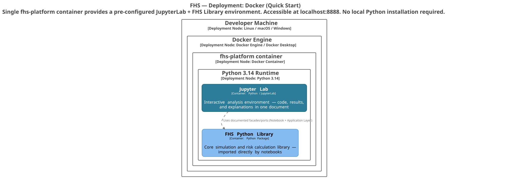
7.3.2. Container Details
| Container | Technology | Description |
|---|---|---|
|
Python 3.14-slim + JupyterLab |
Pre-configured image with Python 3.14, NumPy, SciPy, Matplotlib, Plotly, and the FHS library |
FHS Python Library |
Python package (pre-installed) |
All DDD-layered services available immediately — no additional setup required |
Scenario Configuration |
YAML files (bind mount) |
Host directory mounted into the container for persistent scenario edits |
7.3.3. Setup
# From the project root
docker compose -f cicd/docker-compose.yml up --profile fhs
# Open http://localhost:8888Requirements: Docker Engine or Docker Desktop.
7.4. Platform Compatibility
| Platform | Lima VM | Docker |
|---|---|---|
macOS (Intel + Apple Silicon) |
Lima + Docker Desktop |
Docker Desktop |
Linux |
Lima + Docker Engine |
Docker Engine |
Windows |
Not supported |
Docker Desktop (WSL 2) |
| Shell scripts and Makefiles target Linux and macOS only. Windows users should use Docker or WSL 2. |
7.5. Build the Arc42 Documentation
docker compose -f cicd/docker-compose.yml up --profile docs
# Output: docs/arc42-docs.htmlThe documentation builder uses Python 3.14-slim with OpenJDK 21, docToolchain 3.4.1, and Gradle 8.5.
7.6. Scenario Configuration — Backup and Recovery
All scenario inputs live in YAML files under apps/fhs/notebooks/config/.
These files are the single source of truth for reproducible simulations.
Backup strategy:
-
Commit
config/*.yamlto version control after each significant change. Git history serves as a full audit trail. -
To snapshot a configuration before a major edit, copy the file:
cp blockchain.yaml blockchain_backup_$(date +%Y%m%d).yaml
Recovery:
-
Roll back to any previous version with
git checkout <commit> — apps/fhs/notebooks/config/blockchain.yaml. -
The seed field ensures that identical YAML produces identical simulation results — no further state is stored outside the YAML and the codebase.
What is NOT backed up automatically:
-
Executed notebook outputs — strip outputs before committing (the
nbstripoutpre-commit hook does this automatically). -
Exported HTML/PDF reports — regenerate from the committed YAML and code.
7.7. CI/CD Pipeline
The project CI/CD runs inside Docker containers using the cicd/docker-compose.yml profiles:
| Profile / Command | Purpose |
|---|---|
|
pytest suite — unit tests for all modules |
|
ruff format + ruff check code quality checks |
|
mypy type checking |
|
Architecture layer boundary tests (import restrictions) |
|
Jupyter security defaults validation |
|
Complete pipeline: security + ci + docs |
Part of Arc42 Architecture Documentation
8. Cross-cutting Concepts
8.1. Design Principles
| Principle | How it’s applied |
|---|---|
Correctness first |
Risk calculations are statistically sound. All results are validated by tests before visualization. |
Plain language |
Every metric includes a one-sentence explanation in EUR terms. |
KISS — no infrastructure |
Direct Python library imports. No REST API, no database, no message queue. |
Single source of truth |
Scenario configuration is centralized in |
Semantic Colour System |
All chart colours are referenced by token ( |
8.2. Project Language
FHS uses two language layers across architecture docs, notebooks, charts, and reports.
-
Product Ownership and Agile Portfolio Management come first: feature hypothesis, initiative, backlog priority, roadmap decision, business value, delivery confidence, budget fit, decision recommendation.
-
Risk Management comes second: business value floor, loss view, Loss at Risk, CVaR, stress scenario, risk appetite, assumption quality.
Banking remains the quality bar for governance and validation, but the product should not sound like software made only for banks in titles or opening sections.
8.3. Error Handling
| Case | Behavior |
|---|---|
Invalid Feature parameters (e.g., |
Validation is enforced by Pydantic/domain rules. Errors surface as validation exceptions ( |
High uncertainty with Normal distribution ( |
|
Invalid correlation matrix |
Validation is executed before decomposition; invalid matrices are rejected with explicit diagnostics ( |
8.4. Configuration Governance
-
Scenario changes are persisted as YAML snapshots and versioned via
VersioningService. -
ScenarioConfigurationChangedevents are emitted throughEventBus. -
EventLoggercreates an auditable change trail in notebook logs.
8.4.1. Scenario YAML Lifecycle
The lifecycle of a scenario YAML file covers five stages:
-
Edit — User edits
apps/fhs/notebooks/config/*.yamldirectly or via the Configuration Form widget in Notebook 02. -
Validate —
ScenarioService.load()validates the YAML against theScenarioConfigPydantic schema at load time. Invalid YAML raises aValidationErrorbefore any simulation runs. -
Version —
VersioningServicecreates a timestamped snapshot inconfig/versions/on each save.ScenarioConfigurationChangedevents are emitted toEventBus. -
Audit —
EventLoggerwrites domain events atINFOlevel. The Python logger in JupyterLab captures this in notebook output. -
Backup — YAML files should be committed to git after significant changes (see Deployment chapter for backup strategy). The seed field ensures reproducible results from any committed version.
8.5. Strategic Feature Categories
Not every feature generates direct business value. Strategic categories explain why features with negative standalone ROI are still worth building. The category is a free-text field in scenario YAML — teams choose the label that best describes their context. The neutral set below works across software, operations, healthcare, logistics, and public sector portfolios.
| Category | Business justification | Typical examples |
|---|---|---|
Value Driver |
Direct business value expected. Positive ROI pays for the portfolio. |
New product capability, upsell feature, retention improvement |
Efficiency |
Reduces cost, time, or process waste. Value is captured as savings or throughput. |
Automation, workflow improvement, self-service tooling |
Risk Reduction |
Reduces operational, technical, or financial exposure. Value is the avoided loss. |
Security hardening, reliability improvement, dependency removal |
Regulatory Compliance |
Required by law or governance mandate. Cost of non-compliance (fines, exclusion) exceeds development cost. |
GDPR, safety regulations, audit requirements |
Strategic Option |
Creates a future capability, market entry point, or learning opportunity. Value is optionality. |
Platform foundation, market pilot, technical spike |
Resilience |
Improves robustness, continuity, or stability under stress. Value is realized in crisis, not in normal operation. |
DR/BCP capability, redundancy, degraded-mode handling |
Portfolio Advisor flags features with negative standalone ROI and confirms portfolio-level profitability. strategic_category is a string field — any label is valid; the table above provides the canonical vocabulary.
8.6. Statistical Accuracy
-
NumPy seeded random generator ensures reproducibility. Set
seed=42for identical results. -
Minimum 1,000 scenarios required; 10,000 recommended for stable VaR estimates.
-
VaR 95% is the 5th percentile of simulated distribution (non-parametric).
8.7. Logging and Observability
FHS uses Python’s standard logging module, configured via infra/config.py (SimulationConfig, DEFAULT_CONFIG).
Log level is set at startup; notebook users see warnings and above in cell output.
No external telemetry, no remote log shipping — all logs stay local.
Key logging points:
-
ScenarioServicelogs config load, validation failures, and version-snapshot writes. -
EventLoggerwrites domain events (ScenarioConfigurationChanged) to the Python logger atINFOlevel. -
Simulation runs do not log intermediate state (performance constraint).
8.8. Performance Strategy
FHS targets 10,000-scenario Monte Carlo in under 2 seconds on standard laptop hardware. Strategy:
-
Vectorized NumPy arrays — no Python loops in the Monte Carlo hot path; all sampling is batch-computed.
-
numpy.random.default_rng— modern, statistically stronger PRNG that is also faster than the legacyRandomState. -
Pre-allocated output arrays —
SimulationResultholds pre-computed VaR/CVaR so repeated reads are O(1). -
No caching between cells — results are re-computed on each
simulate_feature()call; this is intentional (inputs may change). For 100k+ scenarios, users are advised to assign results to a variable.
8.9. Security and Trust Model
FHS has a minimal attack surface: it is a local library with no network I/O and no user accounts.
| Boundary | Control |
|---|---|
YAML loading |
|
Notebook code execution |
Jupyter’s execution model gives notebooks full Python access. FHS does not add further sandbox restrictions — this is a user-environment responsibility. |
No secrets handling |
FHS stores no credentials, API keys, or personal data. Scenario YAML files contain only business estimates. |
Dependency supply chain |
Dependencies are pinned in |
8.10. Test Strategy
FHS follows a layered test strategy, enforced in CI on every commit:
| Test Type | Scope | Tool |
|---|---|---|
Unit tests |
Individual functions in |
pytest — currently 1,374 tests, 100% branch coverage target |
Architecture boundary tests |
DDD layer import restrictions (no notebook imports from |
|
Statistical regression tests |
VaR/CVaR output within ±1% of theoretical value across seeds |
pytest + NumPy assertion tolerances |
Notebook execution tests |
All notebooks execute without error in a clean kernel |
|
Security defaults tests |
Jupyter |
|
8.11. Notebook Code Cell Visibility Convention
Rule: All Python code cells in every notebook must have their source hidden.
The primary audience — Product Owners, Portfolio Owners, Agile leaders — reads outputs and decisions, not implementation code.
Every code cell carries the metadata {"jupyter": {"source_hidden": true}}.
Verification:
grep -c '"source_hidden": true' apps/fhs/notebooks/01-getting-started.ipynb
# Expected: equals the number of code cells in the notebookNew notebooks and notebook edits must apply this metadata after any NotebookEdit tool call, because the tool does not add it automatically.
8.12. Type Annotation Strategy
-
No
Anyin public presentation APIs. Widget builder signatures use concrete types from domain value objects. -
TYPE_CHECKINGguards — imports used only for type hints are wrapped inif TYPE_CHECKING:blocks to avoid circular imports at runtime:from __future__ import annotations from typing import TYPE_CHECKING if TYPE_CHECKING: from fhs.core.model.value_objects.multi_year_result import MultiYearResult def as_label(result: MultiYearResult) -> str: return str(result) -
Protocol-based contracts — collaborators in
AdvancedPortfolioServicesub-facades accept aPortfolioContextProtocol rather thanAnyor concrete class references. -
Frozen dataclasses for all value objects; Pydantic
BaseModelfor domain entities.
8.13. Public API Stability
The public API surface is everything exported from fhs/init.py.
Stability contract (semver-aligned):
-
Patch (1.0.x) — bug fixes, statistical corrections; no signature changes.
-
Minor (1.x.0) — new symbols added to
all; existing signatures unchanged. -
Major (x.0.0) — breaking changes to existing public symbols (rename, removal, parameter changes).
Stability guarantee does NOT cover:
-
fhs.core.*— internal domain objects; import them at your own risk. -
fhs.presentation.notebook.*— notebook widget internals may change between minor versions. -
Generated
_generated/*.adocfiles — auto-generated; do not import or include directly.
Notebooks import exclusively from fhs.* (enforced by architecture tests in tests/test_architecture.py).
Part of Arc42 Architecture Documentation
9. Architecture Decisions
The decisions below shape the current architecture and its trade-offs.
Full ADR files are available in doc/arc42/decisions/.
9.1. ADR-001: Python Stack
Decision: Python 3.14+ baseline with NumPy, SciPy, Matplotlib, Plotly, and Jupyter Lab.
Rationale: The scientific computing ecosystem provides all the mathematical building blocks (vectorized simulation, statistical quantiles, distribution sampling) without custom implementations. Jupyter notebooks give non-technical users an interactive environment that combines code, results, and explanations in a single document.
Rationale: Python 3.14+ with modern type hinting, pattern matching, and numpy.random.default_rng for reproducible seeded simulation.
Trade-off: Performance is lower than compiled languages, but 10,000 Monte Carlo scenarios complete in under 2 seconds — fast enough for interactive use.
9.2. ADR-002: Risk Calculation Methods (VaR / CVaR / Monte Carlo)
Decision: Implement non-parametric VaR and CVaR via Monte Carlo simulation using NumPy/SciPy. Alternatives considered and rejected:
| Approach | Description | Rejected reason |
|---|---|---|
Parametric VaR (variance-covariance) |
Closed-form VaR assuming Normal distribution |
Assumes Normality; underestimates tail risk; wrong for skewed business outcomes |
Historical simulation |
VaR from real past outcomes |
No historical data exists for new product features |
Extreme Value Theory (EVT) |
Models distribution tails explicitly |
Requires large sample sizes and statistical expertise beyond the target audience |
Cornish-Fisher expansion |
Semi-parametric VaR with skewness/kurtosis correction |
Adds complexity without proportional benefit for 10,000-scenario runs |
Monte Carlo + Normal/Lognormal ← chosen |
Flexible simulation with configurable distributions (Normal, Lognormal, Beta, bounded) |
Simple to explain, easy to extend, statistically sound for the uncertainty range of product estimates |
Trade-off: Monte Carlo with Normal distribution underestimates tail risk in heavy-tailed real-world distributions. Mitigated by: high scenario counts (10k–100k+), explicit clipping-bias warnings, and guidance to use Beta distribution for bounded parameters. See also: Risks in Risks and Technical Debt.
Full ADR: ADR-002
9.3. ADR-003: KISS Architecture — Direct Library, No API
Decision: Notebooks import the FHS library directly (from fhs import Feature, FeatureSimulator). No REST API, no database, no message queue.
Rationale:
# What we chose — one line, no infrastructure
result = simulator.simulate_feature(feature, scenarios=10_000)
# What we rejected — API, network, JSON round-trips
response = requests.post('/api/simulations/run', json=payload)Trade-off: Single-user, local use only. JupyterHub can add multi-user support later without changing the library.
9.4. ADR-004: Notebooks as First-Class Components
Decision: Each notebook is an architectural component in the C4 model with a defined audience and a defined place in the learning path (Core / Tutorial / Advanced — see [_level_3_component_view]).
Trade-off: Notebooks are harder to unit-test than pure Python. Mitigated by keeping all business logic in the library and using notebooks only for orchestration and presentation.
9.5. ADR-009: Development Cost and Net Value
Decision: Feature accepts a development_cost parameter. SimulationResult exposes net_value (expected business value minus cost) and roi.
Rationale: A feature with high expected business value but a development cost that exceeds it has negative net value. Without the cost, the Portfolio Advisor cannot make budget-constrained recommendations.
Example:
feature = Feature(
name="Mobile Checkout",
expected_users=20_000,
conversion_rate=0.12,
uncertainty=0.20,
business_value_per_conversion=45.0,
development_cost=25_000,
)
result = simulator.simulate_feature(feature)
print(f"Net value: EUR {result.net_value:,.0f}") # expected business value - 25,000
print(f"ROI: {result.roi:.1%}")9.6. ADR-013: Centralized Scenario Data (YAML + ScenarioService)
Decision (current): Use YAML scenario files (apps/fhs/notebooks/config/*.yaml) as canonical source, loaded via ScenarioService and load_scenario().
Rationale: Notebook scenario data and budget settings must be editable, versionable, and auditable without code edits. YAML + repository/application services separate persistence from domain logic and keep notebooks thin.
Trade-off: Additional orchestration complexity (repository + service layer), but improved consistency, validation, and change traceability.
9.7. ADR-014: Mixin-based Presentation Facade
Decision: The FHSDisplay facade is implemented as a composition of six mixins (_RiskMixin, _PortfolioMixin, _CapitalBudgetingMixin, _DeliveryMixin, _DistributionMixin, _PrimitivesMixin), each owning one business-domain slice of the presentation API.
Rationale: A single monolithic show module became unmaintainable as the number of display methods grew past 30. Mixins provide domain cohesion without sacrificing the unified show.* call surface that notebooks rely on.
Trade-off: Python MRO must be respected; no two mixins may define the same method name. All sub-module imports use TYPE_CHECKING guards to avoid circular imports at runtime. See decisions/014-mixin-facade-pattern.adoc for full ADR.
9.8. All Decisions — Reference Table
| ADR | Decision | Status | Date | Detail |
|---|---|---|---|---|
ADR-001 |
Python Stack Selection |
Accepted |
2025-06 |
|
ADR-002 |
Risk Assessment Methods (VaR/CVaR/Monte Carlo) |
Accepted |
2025-06 |
|
ADR-003 |
KISS Architecture — No API |
Accepted |
2025-06 |
|
ADR-004 |
Jupyter Notebooks as Components |
Accepted |
2025-06 |
|
ADR-005 |
UX Simulation Integration |
Accepted |
2025-06 |
|
ADR-006 |
C4 Model + Arc42 Documentation |
Accepted |
2025-06 |
|
ADR-007 |
Package Structure and Testing |
Accepted |
2025-06 |
|
ADR-008 |
Container Strategy |
Accepted |
2025-06 |
|
ADR-009 |
Development Cost and ROI |
Accepted |
2026-02 |
|
ADR-010 |
Correlation Modeling Strategy |
Accepted |
2026-02 |
|
ADR-011 |
Budget Optimization Algorithm |
Accepted |
2026-02 |
|
ADR-012 |
Budget Constraint Scope (Portfolio-level) |
Accepted |
2026-02 |
|
ADR-013 |
Centralized Scenario Data (YAML + ScenarioService) |
Accepted |
2026-02 |
|
ADR-014 |
Mixin-based Presentation Facade ( |
Accepted |
2026-03 |
Part of Arc42 Architecture Documentation
10. Quality Requirements
10.1. Quality Tree
The tree below maps the four Quality Goals (defined in Introduction and Goals) to their contributing quality attributes. Correctness ranks first because stakeholders act on the numbers; a statistically wrong result causes worse decisions than no result at all. Simplicity and Transparency are co-constraints: results must be understandable without a finance degree, and every metric must be explained in context — not just displayed. Practical Value closes the loop: insights that cannot be acted on in a sprint planning session are not useful to a Product Owner.
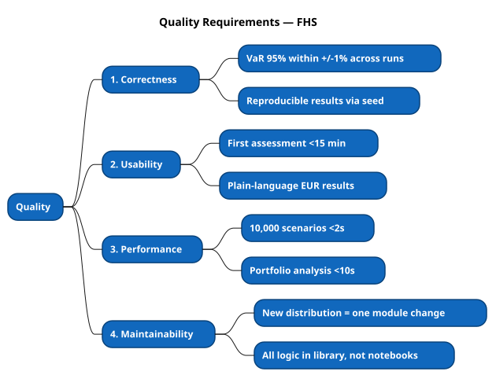
10.2. Key Quality Scenarios
| Quality Attribute | Scenario | Target |
|---|---|---|
Correctness |
A Monte Carlo simulation with 10,000 scenarios produces VaR 95% values within +/-1% of the theoretical value across five independent runs with the same seed. |
Deviation ⇐ 1% |
Usability |
A Product Owner with no financial background opens 01-getting-started.ipynb and completes a first feature risk assessment without external help. |
Complete within 15 minutes |
Performance |
A Monte Carlo simulation with 10,000 scenarios completes in under 2 seconds on standard laptop hardware. |
< 2 seconds |
Maintainability |
A new distribution type can be added to the monte_carlo service without changing the simulation or risk services, or any notebook. |
Change isolated to one module |
10.3. Quality Goal — Scenario Traceability
The table below links each Quality Goal from Introduction and Goals to the scenario that verifies it and the mechanism that enforces it.
| Quality Goal | Quality Scenario | Verification | Enforcement |
|---|---|---|---|
Correctness |
Monte Carlo with 10,000 scenarios produces VaR 95% within ±1% of theoretical value across five runs with the same seed. |
|
NumPy seeded |
Simplicity |
A Product Owner with no financial background completes a first risk assessment in Notebook 01 within 15 minutes, without external help. |
Manual walkthrough; notebook UX review. |
Progressive disclosure (Core → Tutorial → Advanced tracks); plain-language metric labels throughout. |
Transparency |
Every |
Code review; |
|
Practical Value |
A Risk Manager can run a full portfolio stress test and export a decision report within a single sprint planning session (~2 hours). |
End-to-end notebook walkthrough (Notebook A01–A02). |
|
Performance |
(Supporting Correctness & Practical Value) 10,000-scenario Monte Carlo completes in under 2 seconds on standard laptop hardware. |
|
NumPy vectorized simulation; no Python loops in the hot path. |
Maintainability |
(Supporting Correctness) A new distribution type can be added to the Monte Carlo engine without changing |
Architecture boundary test ( |
DDD layering enforced by import restriction tests; |
Part of Arc42 Architecture Documentation
11. Risks and Technical Debt
Known risks with their mitigations and remaining technical debt.
11.1. Risks
| Risk | Severity | Impact | Mitigation |
|---|---|---|---|
Clipping bias |
Medium |
Normal distribution clips negative values to zero, inflating the mean by ~0.5%. Effect grows with uncertainty > 0.5. |
Warning issued when uncertainty > 0.5. Beta distribution recommended for bounded parameters (conversion rates). |
Correlation estimation |
Medium |
Features rarely have historical correlation data. Default (uncorrelated) may underestimate portfolio risk if features actually move together. |
Users can supply a custom correlation matrix. Matrix is validated before Cholesky decomposition with clear error messages. |
Budget optimization heuristic risk |
Medium |
|
Mitigated by transparent alternatives output and separate exact combinatorial mode ( |
Development cost uncertainty |
High |
Development costs are point estimates with typical ±30-50% error. Bad cost estimates produce misleading ROI and portfolio recommendations. |
Documented limitation. Future: add |
Model risk — VaR/CVaR validity boundary |
High |
VaR and CVaR are known to underestimate tail risk in fat-tailed distributions (Black Swan events). The Normal/Lognormal simulation engines produce well-behaved tails that may not reflect real business outcome distributions. All results are estimates, not guarantees. |
Results are always presented alongside the underlying uncertainty parameters. Notebooks include plain-language disclaimers. For heavy-tail scenarios, users are guided to higher scenario counts (100k+) and warned to treat tail metrics as directional, not precise. |
Input data quality — estimates as facts |
High |
|
Scenario configuration form (Notebook 02) prominently labels inputs as estimates. Output headings include "Simulated" to signal model-derived values. Users are encouraged to run sensitivity analysis to understand how input uncertainty drives output uncertainty. |
Reproducibility under library upgrades |
Medium |
NumPy’s random number generator behavior has changed between major versions (legacy vs. |
|
Audit trail persistence |
Medium |
|
YAML version snapshots provide a persistent change history via |
False confidence effect |
Medium |
Stakeholders may treat simulation outputs (e.g. "VaR 95%: EUR 42,317") as precise forecasts rather than probability estimates. This risk grows when the tool is used to justify large budget commitments without communicating model limitations. |
Every metric card includes a one-sentence plain-language explanation. The Quality Goal "Transparency" (Kap. 1) mandates that no metric is displayed without context. Risk Managers reviewing outputs should communicate confidence intervals alongside point estimates. |
11.2. Technical Debt
| Debt | Priority | Description |
|---|---|---|
Cost uncertainty modeling |
Medium |
|
Algorithm documentation |
Low |
ADR-011 should be extended with practical guidance on when to use greedy budget optimization vs. exact combinatorial selection. |
Solver dependency transparency |
Low |
|
Input validation coverage |
Low |
|
Part of Arc42 Architecture Documentation
12. Glossary
Single source of truth: all terms are defined in apps/fhs-arc42-doc/doc/registry/architecture-data.yaml under the glossary: key.
The generated AsciiDoc fragments below are produced from the registry — do not edit them manually.
The notebook at apps/fhs/notebooks/GLOSSARY.ipynb renders a subset of these terms in a user-friendly table for Product Owners reading in JupyterLab.
If a term is missing from the notebook, add it to the registry first, then regenerate.
12.1. Financial Risk Terms
-
Business Value Floor (BVF 95%) - The simulated business value exceeded in 95 out of 100 scenarios. The primary downside boundary metric in FHS. Equivalent to a VaR-style 5th percentile of the business value distribution — not a loss metric.
-
VaR (Value at Risk) - Financial industry term for the loss not exceeded at a given confidence level. In FHS, the equivalent concept is the Business Value Floor (BVF 95%) — the value floor, not a loss floor. See BVF 95%.
-
Expected Shortfall (CVaR / ES) - Average outcome across the worst 5 percent of scenarios. More conservative than BVF 95% because it captures the severity of tail outcomes, not just the threshold.
-
Loss at Risk (LaR 95%) - 95th percentile of the loss distribution — the maximum loss not exceeded in 95 out of 100 scenarios. Used for delivery risk and cost-overrun analysis.
-
Risk Appetite - The maximum level of risk an organization is willing to accept when pursuing its objectives. In FHS, expressed as thresholds on BVF 95%, CVaR loss, break-even probability, and concentration limits.
-
Assumption Quality - A metadata label (e.g., expert-estimate, reviewed, validated) describing how rigorously the input parameters for a simulation have been derived. Low assumption quality reduces confidence in simulation outputs even when the math is correct.
-
Decision Grade - A composite confidence label (GO / Conditional GO / Review) assigned to a feature or portfolio recommendation based on risk metrics and assumption quality. Intended for Product Owners, Portfolio Owners, and Investment Committees.
-
Value Driver - A strategic category for features that are expected to generate direct business value with positive ROI. It broadens an older sales-first label so cost savings, risk reduction, and operational improvements fit the same category.
-
Monte Carlo Simulation - 10,000 randomized scenarios per feature.
-
Expected Business Value - Mean outcome across all scenarios.
-
Risk Ratio - Standard deviation divided by expected business value.
-
Budget Frontier - Optimal portfolio selections balancing risk and budget via ILP/SLSQP solvers.
-
Correlation - How features move together.
-
Diversification - Risk reduction from uncorrelated features.
-
HHI (Concentration Index) - Portfolio diversification measure.
-
Stress Testing - Scenario analysis with adverse conditions. == Delivery Risk Terms
-
Break-Even Probability - Percentage of Monte Carlo scenarios in which total project profit is positive.
-
Expected Loss - Average monetary loss across all scenarios in which profit is negative.
-
LaR 95% (Loss at Risk, 95th percentile) - Maximum loss not exceeded in 95 out of 100 scenarios.
-
Sunk Cost at Cancellation - Expected development spend that is unrecoverable when a project is cancelled mid-delivery.
-
Bernoulli Gate - Binary random variable (delivered or not delivered) used in delivery risk simulation. == Multi-Year Simulation Terms
-
Multi-Year Simulation - Per-feature Monte Carlo projection across multiple years with independent per-year sampling.
-
YearResult - Value object with one year’s expected, BVF 95% (floor), P95 (ceiling), and spread.
-
NPV (Net Present Value) - Sum of discounted future business values minus upfront development cost. == Product and Portfolio Terms
-
Portfolio - All features in a sprint or release viewed as an investment portfolio with risk and correlation.
-
Feature Hypothesis - Testable assumption about feature impact represented as a Feature model.
-
Strategic Feature Category - Strategic intent classification — Value Driver, Efficiency, Risk Reduction, Regulatory Compliance, Strategic Option, or Resilience. Free-text field; the canonical set is documented in the Cross-cutting Concepts chapter.
-
Opportunity Cost - Expected business value lost by not building a feature.
-
Net Value - Expected business value minus development cost.
-
ROI (Return on Investment) - (Expected Business Value minus Development Cost) divided by Development Cost.
-
Decision Policy - A configurable set of thresholds (min break-even probability, min BVF ratio, max CVaR loss) that maps simulation results to GO / Conditional GO / Review recommendations. Product Owner-facing language for risk appetite rules.
-
Risk Appetite Policy - A bank-grade formalization of the Decision Policy adding concentration limits, sunk-cost caps, and assumption quality requirements. Targeted at Risk Managers, Portfolio Owners, and Investment Committees. == Architecture and Technical Terms
-
Jupyter Notebook - Interactive computing environment combining code, visualizations, and text.
-
NumPy / SciPy - Python libraries for numerical and scientific computing.
-
Matplotlib / Plotly - Charting libraries for static and interactive visualization.
-
Docker - Container platform used for reproducible documentation and notebook environments.
-
Pydantic - Python library for schema and model validation.
-
C4 Model - Architecture diagramming model with context, container, component, and code views.
-
Arc42 - Template for software architecture documentation.
-
UX Simulator - Module that models user behavior (task completion rates, survey responses, segmentation).
-
PlantUML - Diagram-as-code tool for architecture visualizations.
-
Semantic Colour Palette - 16-token color system with WCAG 2.1 AA contrast support.
-
WCAG 2.1 AA - Accessibility level requiring at least 4.5 to 1 contrast for normal text.
Part of Arc42 Architecture Documentation
13. About This Documentation
Generated with docToolchain v3.4.1 using the arc42 template.
Build Tool |
docToolchain v3.4.1 |
Template |
|
Inception Canvas |
Architecture Inception Canvas — one-page architecture overview |
Communication Canvas |
Architecture Communication Canvas — one-page communication and decision view |
Format |
AsciiDoc |
Generated |
2026-05-16 |
Version |
1.0.0 |
Appendix A: C4 Reference
Visual guide to C4 Model elements and their official notation, following C4 Model standards.
A.1 Official C4 Notation Diagram
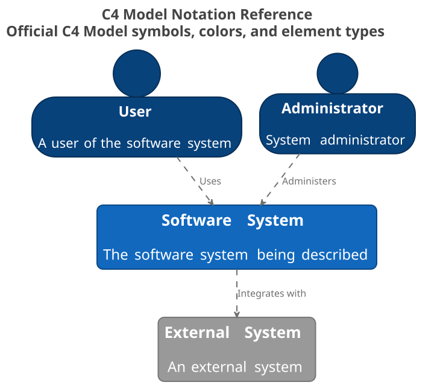
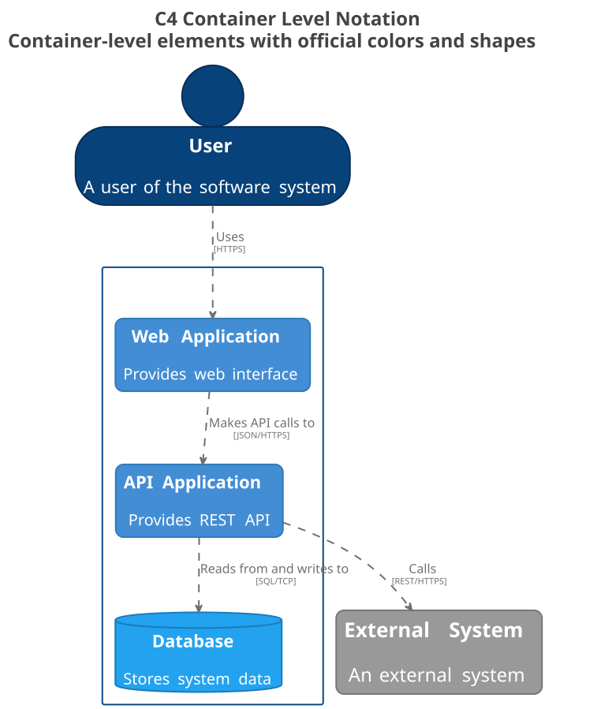
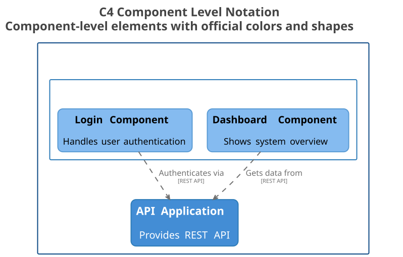
The diagrams above show the official C4 Model notation as defined by Simon Brown, generated using Structurizr DSL. Each element has a specific shape, color, and purpose within the four levels of abstraction.
A.2 Element Reference
| Element | Purpose | Color Code |
|---|---|---|
Person |
Users, actors, stakeholders |
08427B |
Software System |
High-level systems |
1168BD |
External System |
Third-party systems |
999999 |
Container |
Deployable units, applications |
438DD5 |
Database |
Data storage |
23A2F0 |
Component |
Code groupings, modules |
85BBF0 |
Deployment Node |
Infrastructure: VMs, containers, machines |
border only (white fill) |
A.3 Views
| View | Name | Audience | Focus |
|---|---|---|---|
1 |
System Context |
Non-technical stakeholders |
Business scope |
2 |
Container |
Technical stakeholders |
Technology choices |
3 |
Component |
Software architects |
Code organization |
4 |
Code |
Developers |
Implementation details |
Deployment |
Deployment |
DevOps, architects |
Infrastructure and runtime topology |
Dynamic |
Dynamic (Sequence) |
Architects, developers |
Runtime interaction flows |
The Deployment View is orthogonal to the four levels of abstraction — it maps containers onto the real infrastructure nodes (VMs, Docker containers, machines) where they run. FHS defines three deployment environments: Lima VM, Docker, and Local Python Install (see Deployment View).
The Dynamic View traces a specific runtime scenario (e.g. Product Owner opening a notebook and running a simulation) across containers and components.
A.4 References
-
C4 Model: https://c4model.com/
-
Notation Guide: https://c4model.com/diagrams/notation
-
Structurizr: https://structurizr.com/
-
Arc42 Template: https://arc42.org/
Appendix B: Architecture Canvases
Direct HTML access to both architecture canvases. The pages render the canvas content natively instead of embedding thumbnail-style previews.
Architecture Inception Canvas
Open HTML: Architecture Inception Canvas
Open Source: architecture-inception-canvas.drawio